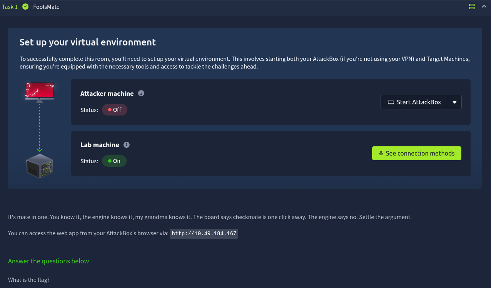
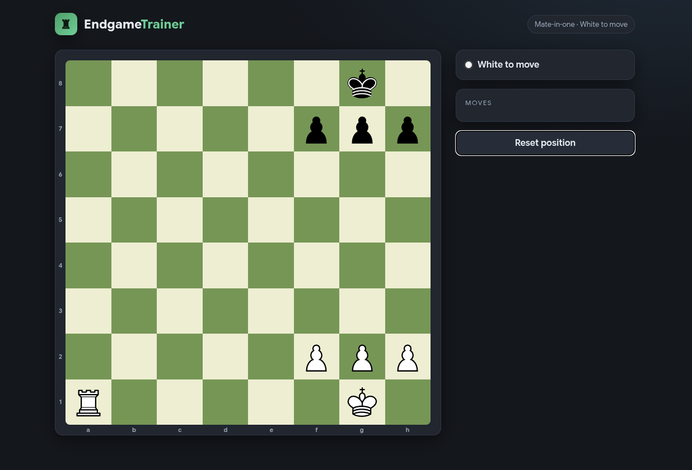
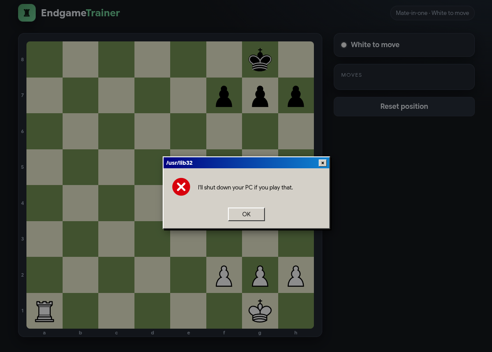
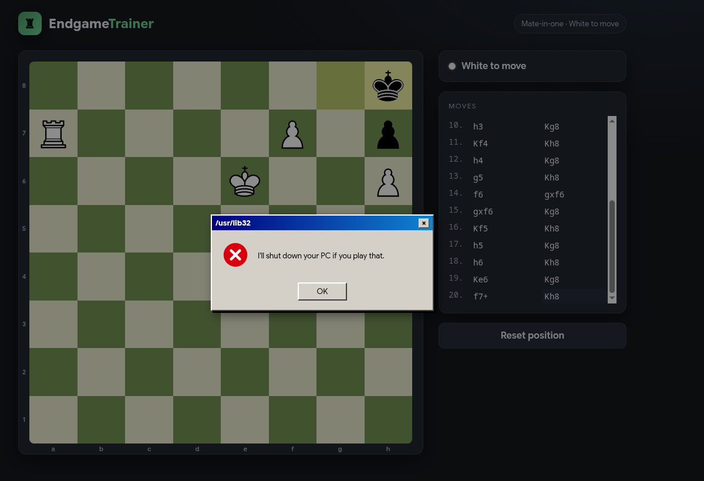
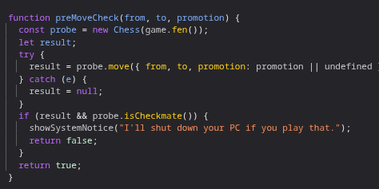
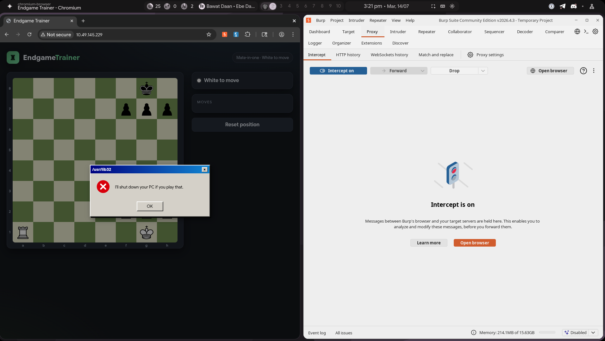
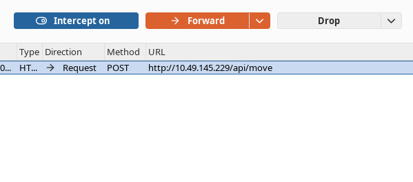
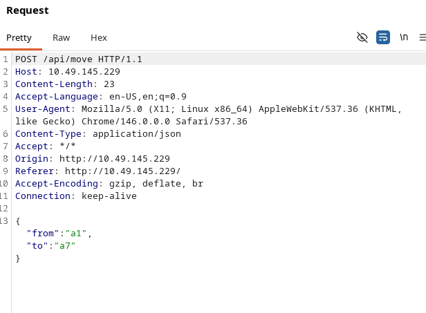
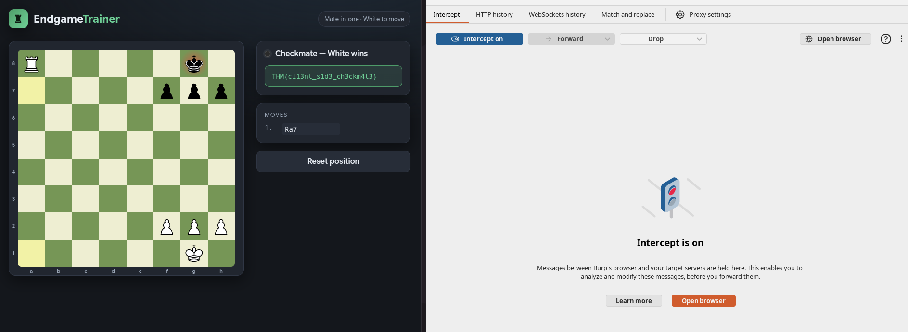

This is a writeup for Fool's Mate on TryHackMe. The box presents a web-based chess game and hides the flag behind a checkmate that the client refuses to let you deliver honestly.

./01 First Look
Right after booting the machine we're faced with a chess game already set up for a one-move checkmate for white.

Moving the rook to deliver the mate looks like the obvious play, but it throws an error. Moving other, non-mating pieces works fine — it's specifically the checkmate that the app doesn't like.

To rule out a rook-specific bug, I tried a different mate entirely — promoting the pawn to a queen. That also delivers checkmate, and it also throws the same error.

That confirms it: every checkmate throws this error, no matter which piece delivers it. Time to stop guessing from the UI and go read the source.
./02 Reading the Source
Digging through app.js turns up the culprit almost immediately.

There's an if statement that always raises the error the moment a checkmate is detected. Since this logic only exists in the browser, the fix is simple in theory: stop trusting the client and tamper with the request sent to the server instead. Burp Suite is the tool for that.
./03 Confirming It's Client-Side
With the proxy running, attempting the checkmate move again shows exactly what we'd expect — nothing. No request ever leaves the browser when a mate is attempted, which confirms the block never touches the server at all.

./04 Forging the Winning Move
Next step: intercept a legal, non-mating move first, so we have a real request to work with, then tamper it into the mating move.


Changing "to:a7" to "to:a8" turns this into the exact move that delivers checkmate for white — and this time it's the server, not the browser, deciding what happens.
./05 Flag
Forwarding the tampered request gets the job done. The client-side guard never gets a say, the server accepts the mate, and the flag appears.

Thanks for reading — the whole box is a solid reminder that any validation living only in app.js is a suggestion, not a rule. If the server doesn't check it too, it isn't actually enforced.